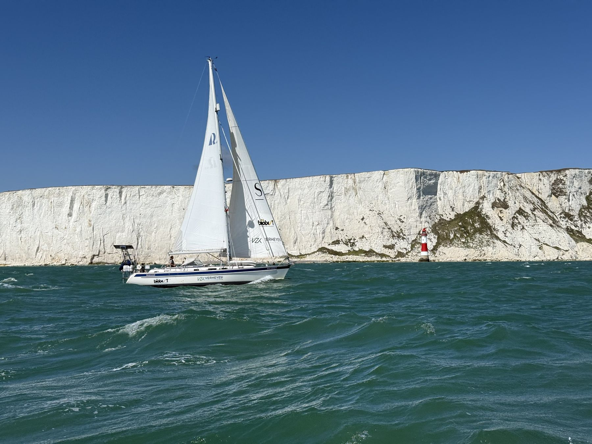
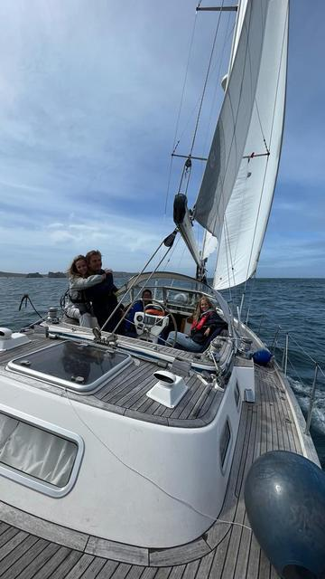
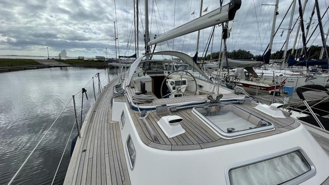
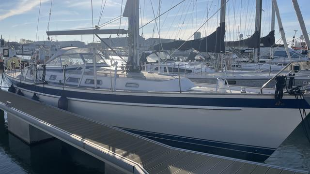
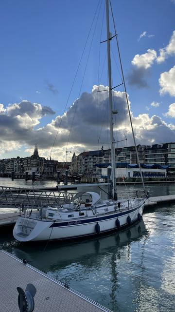
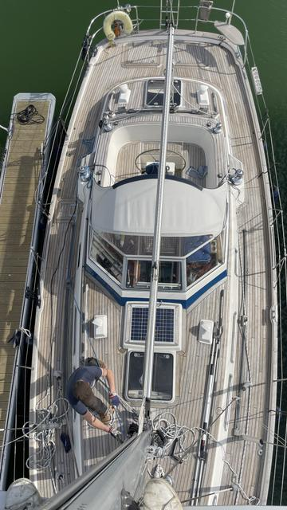
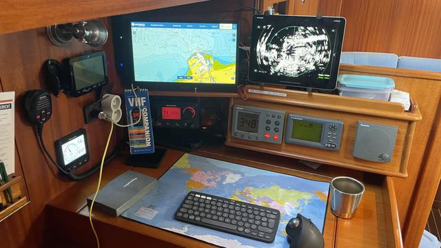
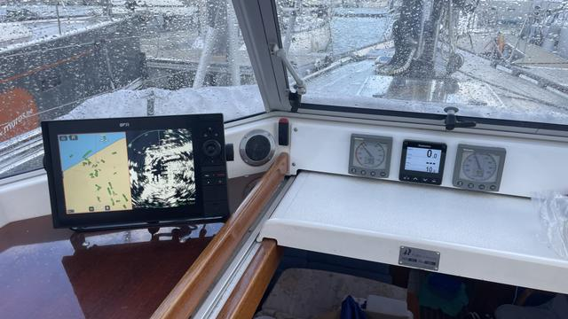
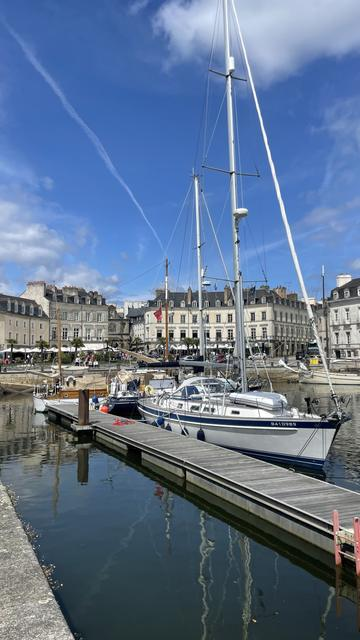

Over Nomad
Onze boot
Op deze pagina wat meer informatie over Nomad, onze onvolprezen boot die ons de wereld zal rondbrengen.
Algemene informatie
| Naam | Nomad |
| Merk & type | Hallberg Rassy 43 mk ii |
| Bouwjaar | 2003 |
| Lengte | 43ft = 13,40m |
| Breedte | 4,05m |
| Diepgang | 2,00m |
| Gewicht | 12,5 ton (leeg; dit zal minstens 14 ton zijn bij vertrek) |
| Aantal zeilen | 5 (grootzeil, 2 genua's, kotterfok, genaker) |
| Aantal slaapplaatsen | 6 stuks: 5 verdeeld over 2 kajuiten, 1 zeebed in carré |
Onze boot is een Hallberg Rassy, een zeer gerenommeerde Zweedse scheepswerf die al meer dan 50 jaar heel kwalitatieve boten bouwen. Deze jachten bieden een optimale combinatie van comfort, veiligheid en goede zeileigenschappen. Ondanks de respectabele leeftijd van 20 jaar, is Nomad in topvorm: ze is zeer goed & liefdevol onderhouden door de vorige eigenaars en het laatste jaar is er flink geïnvesteerd in onderhoud en upgrades. Zie de pagina over de werkzaamheden (uitgevoerd & gepland) voor meer details.
Meer informatie over dit type zeilboot is te vinden op de site van Hallberg Rassy.
Leuk om te weten over Nomad
- Wij zijn de 3de eigenaar van Nomad: de eerste was een Belg, de tweede een gepensioneerde Nederlandse kapitein met een uitgespoken Captain Iglo look. De vorige naam van de boot was "Justo Medio", blijkbaar Portugees voor gulden middenweg of zo.
- Nomad heeft met de vorige eigenaar de Atlantische oversteek al eens succesvol gedaan.
- De naam is blijkbaar niet zo origineel gekozen want een paar weken geleden is er een "Nomad" gespot in de jachthaven aan het Willemdok, van exact hetzelfde type. Maar diens crew is veel minder aantrekkelijk...
- Wat is er nog aan boord om ons leven aangenamer te maken:
- Een goed uitgeruste keuken met gasfornuis en -oven
- Twee ijskasten / diepvriezer
- Twee badkamers met douche en WC
- Ventilatoren in alle kamers voor in tropische streken (geen airco)
- Laptop en iPad
- Muziek-installatie en losse Bluetooth box
- Snorkel en duikuitrusting
- Drie vislijnen en een harpoen
- Onbeperkt breedband internet (dit zal slechts beperkt ingeschakeld worden)
- Yambak en boek kaarten
- Een veilige boot BBQ
- Een SUP
- Twee hangmatten
- Een zwaar anker met 60m lange ketting om veilig en comfortabel in de mooiste baaitjes te kunnen overnachten
- Een yambak
Een paar sfeerbeelden







